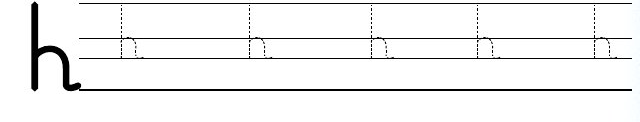
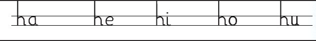

Somo la tano: h
Somo la tano
h
Kuandika herufi ya konsonanti h
Katika somo hili utajifunza kuandika herufi ya konsonanti h.
konsonanti h.
Fuatisha herufi ya konsonanti h.

Andika jibu kwa mkono katika sehemu hii.
Andika herufi ya konsonanti hii kwenye daftari.
Mfano wa kuangalia
Andika jibu kwa mkono katika sehemu hii.
Andika silabi hizi kwenye daftari.

Andika jibu kwa mkono katika sehemu hii.
Andika maneno haya kwenye daftari.
Andika jibu kwa mkono katika sehemu hii.